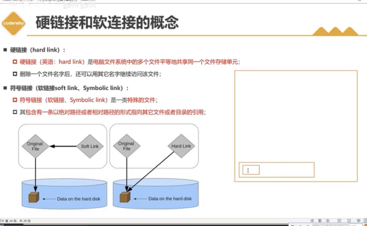
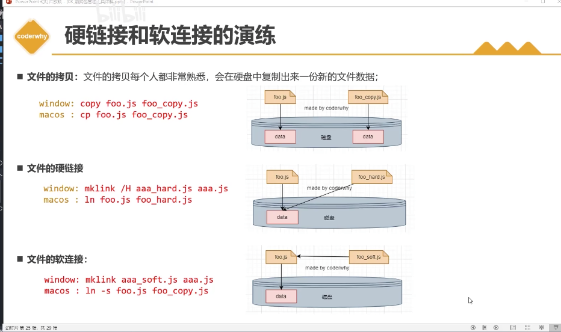
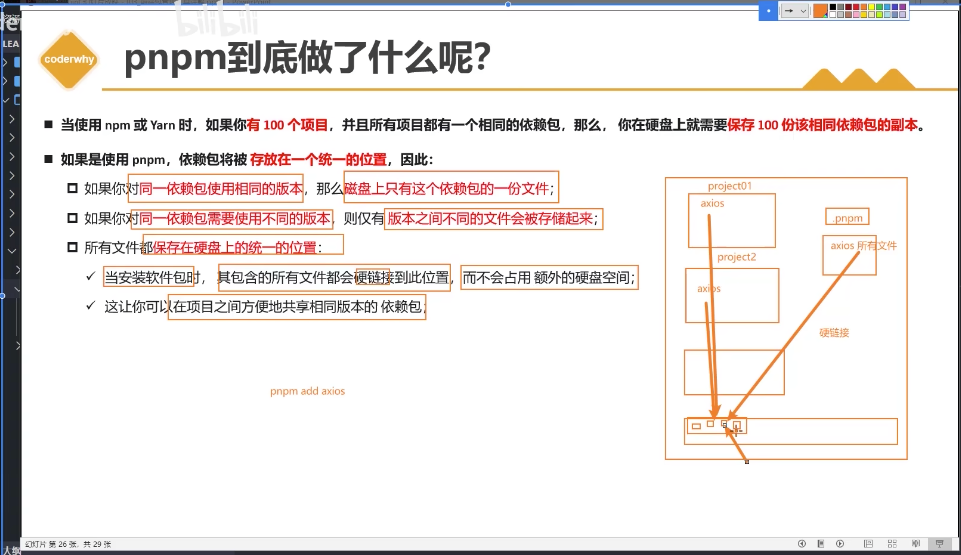
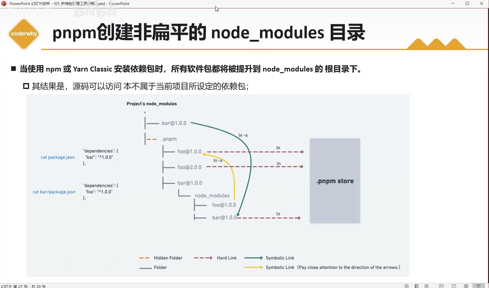
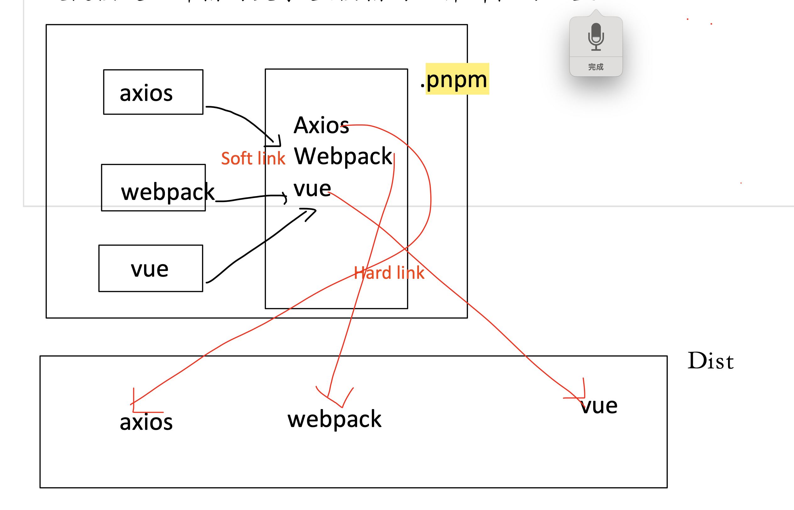
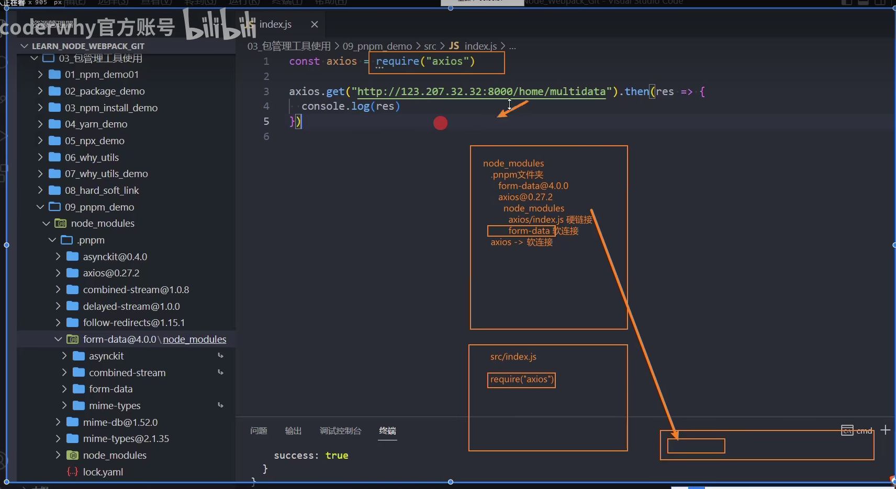
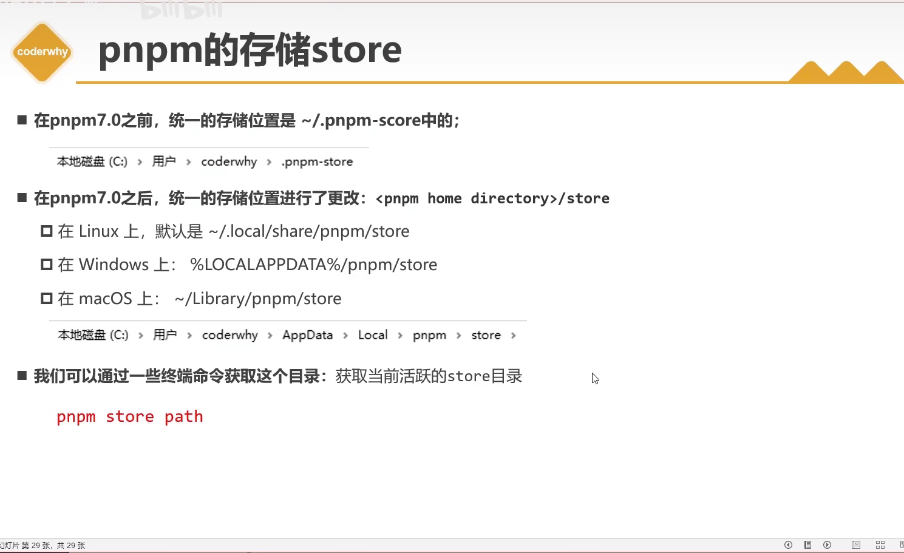

# 软链接和硬链接
# 概念
# 区别
# 总结:
[ 硬链接 ]
与源文件的关系
被链接的文件 A'与源文件 A 指向磁盘中的同一原始数据(同一引用) , 删除文件 A' 不会影响文件 A.
查找文件的方式
指向文件所在的磁盘,直接去磁盘中找对应的文件
[ 软链接 ]
与源文件的关系
被链接的文件 A'指向 源文件 A, 源文件 指向 磁盘中的数据. 删除掉源文件 A 后, 软链接关系将不复存在.A'文件将不能使用.
查找文件的方式
不直接指向文件所在磁盘,指向被链接文件的源文件位置,由源文件指向在磁盘中对应的地址
# pnpm 与 npm 的差别
# pnpm 创建非扁平化的目录
# node_module 文件下面的.pnpm 文件的作用
# pnpm 的优点
# 硬链接, 节省内存空间; 查找快

注: 在 pnpm7.0 之前,同一的存储为位置是 ~/.pnpm-score
# Peer dependencies 对等依赖
对等依赖是一个模块设计 目的是 规定或者标识了当前的包与第三方包的一系列版本或者一个特定的版本.
用来避免核心的库被重复下载的问题
大白话: 项目中依赖的 npm 包 A 的 peer dependency(package.json 中声明)中使用了包 B,则 包 A 优先使用在项目的 package.json 中声明的包 B,假设版本一致的话.
# Peer dependencies 解决依赖包的版本冲突问题
# 当 项目(myProject)的 依赖包 todd-a 与 todd-b 所依赖的包 todd-child 的版本不相同时,将 todd-child 设置为 todd-b 的私有包,来解决该问题.
example:
myProject
node_module
├── lodash 4.17.11
├── todd-a 1.0.0
├── todd-b 1.0.0
│ └── node_modules
│ └── todd-child 2.0.0 // 私有版本
└── todd-child 1.0.0
package.json
"dependencies": {
"todd-a": "^1.0.0",
"todd-b": "^1.0.0"
}
package todd-a
package.json
"dependencies": {
"lodash": "^4.17.11",
"todd-child": "^1.0.0"
}
package todd-b
package.json
"dependencies": {
"lodash": "^4.17.11",
"todd-child": "^2.0.0"
}
# legacy-peer-deps
该命令会导致 npm 在构建包依赖树时完全忽略 peerDependencies，就像 npm 版本 3 到 6 的行为。
legacy-peer-depsis not recommended, as it will not enforce thepeerDependenciescontract that meta-dependencies may rely on.不建议使用 legacy-peer-deps，因为它不会强制执行元依赖可能依赖的 peerDependencies.
← 工程化